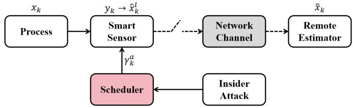

← 返回主页
🎯 本课目标：建立内部攻击者模型——攻击者能篡改事件触发条件但篡改后的数据看起来"正常"。推导反转触发下两种事件触发协议的误差协方差演化公式。

图 1：系统架构。传感器、远程估计器、攻击者三者关系。
1. 攻击者能力假设
我们考虑的是内部攻击者（insider attacker）——攻击者已经渗透了传感器节点，拥有一定的内部访问权限。具体来说，攻击者具备以下能力：
假设 1（系统知识）：攻击者知道系统的全部参数——包括状态转移矩阵 $A$、观测矩阵 $C$、噪声协方差 $Q$ 和 $R$、事件触发协议的阈值参数 $\delta$（确定性协议）或 $\Pi$（随机性协议）。
假设 2（篡改触发）：攻击者可以篡改传感器的事件触发逻辑，包括：
- 反转触发决策——把原本该发的改成不发，不该发的改成发
- 篡改触发参数——修改阈值 $\delta$ 或 矩阵 $\Pi$
⚠ 关键约束：攻击者不能直接修改数据包内容。传输层有加密和完整性校验（如数字签名），攻击者无法伪造有效的测量数据包。攻击者的手段仅限于控制传感器的传输决策。
这一约束非常符合实际——许多 CPS 安全攻防场景中，加密信道保护数据真实性，但传感器节点的传输调度逻辑更容易受到软件层面的攻击（固件篡改、后门触发等）。
2. 反转触发策略
攻击者将事件触发条件反转，使得：
$\gamma_k^a = \begin{cases} 1, & \varepsilon_k \in \widetilde{\Xi}_k \\ 0, & \varepsilon_k \notin \widetilde{\Xi}_k \end{cases}$
即：创新小的时候才发送，创新大的时候不发送。这是对正常协议的完全颠倒。
🎯 攻击者动机：
- 创新大时的测量值包含最多新信息（Kalman 滤波修正大）
- 攻击者故意阻止这些高信息量的测量被发送
- 远程估计器只能收到创新小的数据，对状态估计的帮助微乎其微
- 无线通信率与正常情况相近，不易被检测到异常
3. 攻击者的掩蔽手段
攻击者不仅要搞破坏，还要不被发现。如果通信率发生剧烈变化，网络安全监控系统就会报警。为此攻击者同时篡改触发参数来维持通信率。
3.1 确定性协议下的掩蔽
攻击者篡改阈值 $\delta$ 为 $\delta^a$。原来的通信概率为 $p_d = 2Q(\delta)$，攻击后期望通信率不变，需满足：
$p_d^a = 2Q(\delta^a) = 1 - 2Q(\delta^a) \quad \Rightarrow \quad Q(\delta^a) = \frac{1}{4}$
解得 $\delta^a \approx 0.6745$。此时攻击者设置的"反转阈值"让原本每次都应传输的大创新值不被发送。
💡 理解：攻击者选 $\delta^a$ 使得通信率看起来正常——网络流量监控看不出异常，但传输的内容却从"有价值的信息"变成了"已经知道的事情"。
3.2 随机性协议下的掩蔽
攻击者篡改矩阵 $\Pi$ 为 $\widetilde{\Pi}$。通过调整 $\widetilde{\Pi}$ 使得：
$p_s^a = 1 - \frac{1}{\sqrt{|I + K Z K^\top \widetilde{\Pi}|}} = p_d$
即攻击后的通信概率与正常协议下的通信概率保持一致，掩盖攻击行为。
4. Theorem 1：确定性协议下的攻击后误差协方差
这是论文的第一个核心理论结果。
Theorem 1（确定性协议·反转攻击）：在确定性事件触发协议下，遭受反转触发攻击后，远程估计器的误差协方差为：
$\displaystyle \widetilde{P}_k^d = P + (1 - \gamma_k^a) \big[ 1 + \alpha(\delta^a) \big] \big[ h^{\tau_k}(P) - P \big]$
其中：
$\displaystyle \alpha(\delta^a) = \frac{\delta^a}{\sqrt{2\pi}} \exp\!\left(-\frac{(\delta^a)^2}{2}\right) Q^{-1}(\delta^a)$
4.1 公式解读
| 符号 |
含义 |
攻击影响 |
| $P$ |
理想 Kalman 滤波稳态误差 |
不变 |
| $h^{\tau_k}(P)$ |
开环预测 $\tau_k$ 步的误差 |
不变 |
| $\gamma_k^a$ |
攻击后的传输决策 |
被反转：大创新时不发送（$\gamma_k^a = 0$） |
| $\alpha(\delta^a)$ |
额外不确定性系数 |
攻击者调整 $\delta^a$ 后 $\alpha > 0$，放大误差 |
🔍 直觉：
- 当 $\gamma_k^a = 1$（攻击者允许发送）时，$\widetilde{P}_k^d = P$——误差回归理想水平。
- 当 $\gamma_k^a = 0$（攻击者阻止发送）时，误差从 $P$ 向 $h^{\tau_k}(P)$ 方向额外放大，放大因子 $[1 + \alpha(\delta^a)] > 1$。
- $\alpha(\delta^a)$ 随 $\delta^a$ 变化——攻击者可以通过选择 $\delta^a$ 来控制破坏程度。
5. Definition 1：完全高斯陨石坑分布
论文引入了一个重要的分布概念来解释随机性协议下的攻击效果。为给出随机协议下的结果，首先定义一个特殊的条件概率分布。
Definition 1（完全高斯陨石坑分布，Fully Gaussian Crater Distribution）：一个随机向量 $\xi \in \mathbb{R}^n$ 服从参数为 $(\mu, \Sigma)$ 的完全高斯陨石坑分布，记作 $\xi \sim \text{FGC}(\mu, \Sigma)$，如果其概率密度函数为：
$\displaystyle f_\xi(x) = \frac{1 - \exp\!\big(-\tfrac12 (x-\mu)^\top \Sigma^{-1} (x-\mu)\big)}{(2\pi)^{n/2} |\Sigma|^{1/2} \big(1 - 2^{-n/2} |\Sigma|^{-1/2}\big)}$
💡 直觉理解："陨石坑"（Crater）这个名字很形象——普通高斯分布在中心最高、向四周平滑下降；而"陨石坑分布"在中心处凹陷（概率密度反而低），形状像火山口。这来源于随机性触发条件 $\zeta_k \le \exp(-\tfrac12 \varepsilon_k^\top \Pi \varepsilon_k)$ 造成的"选择性过滤"——某些中心附近的样本被系统性地排除（因为它们的传输概率被 $\exp(-\tfrac12 \varepsilon_k^\top \Pi \varepsilon_k)$ 判定为高，攻击者反转后不让发）。
6. Theorem 2：随机性协议下的攻击后误差协方差
Theorem 2（随机性协议·反转攻击）：在随机性事件触发协议下，遭受反转触发攻击后，通信概率变为：
$\displaystyle p_s^a = \frac{1}{\sqrt{|I + K Z K^\top \widetilde{\Pi}|}}$
远程估计器的误差协方差由 FGC 分布推导得出，其结构形式与确定性协议类似——被阻止传输时误差向 $h^{\tau_k}(P)$ 方向发散，但具体放大因子由 $\widetilde{\Pi}$ 决定。
📌 关键观察：攻击后的通信概率与正常随机性协议的通信概率互为补数。在随机性协议下，反转触发让高概率传输的样本变为低概率，低概率变为高概率——但攻击者可以通过精心选取 $\widetilde{\Pi}$ 来维持总体通信率，实现"隐蔽破坏"。
7. 误差演化的直观理解
为什么反转触发会让估计更差？以下是一个直观的数值例子：
情景模拟：
- 假设系统运行在稳态，$P = 1.0$
- 开环预测 $\tau$ 步后 $h^\tau(P) = 3.0$
- 攻击者选择 $\delta^a = 0.6745$，计算得 $\alpha(\delta^a) \approx 0.25$
- 当攻击者阻止传输时：$\widetilde{P}_k^d = 1.0 + (1 + 0.25) \times (3.0 - 1.0) = 3.5$
- 相比之下，正常的确定性协议下：$P_k^d = 1.0 + 0.15 \times (3.0 - 1.0) = 1.3$
结果：攻击使误差从 1.3 飙升至 3.5，放大约 2.7 倍！
8. 预告：马尔可夫链
🔮 下节课预告：$\tau_k$（自上次传输以来的步数）的演化其实是一个
马尔可夫链。$\tau_k$ 的状态转移矩阵由传输决策 $\gamma_k$ 的概率决定。下节课我们将：
- 建立 $\tau_k$ 的马尔可夫链模型
- 推导攻击前后稳态分布的变化
- 用稳态分布计算长期平均误差协方差
| 课程 |
内容 |
状态 |
| 0101 |
Kalman 滤波基础 |
✅ 已完成 |
| 0102 |
事件触发协议（确定性 + 随机性） |
✅ 已完成 |
| 0103 |
内部攻击模型与误差演化 ← 当前 |
📖 学习中 |
| 0104 |
马尔可夫链与稳态分析 |
🔜 下一课 |
📝 练习
✏️ 练习：理解反转触发对估计的影响
- 为什么反转触发（创新小才发，大时不发）比完全阻断通信更"危险"？
- 攻击者为什么需要维持通信率？如果通信率明显下降会怎样？
- 确定性协议下，如果攻击者不篡改 $\delta$（即 $\delta^a = \delta$），会发生什么？
- 完全高斯陨石坑分布的"中心凹陷"现象在攻击场景中对应什么物理过程？
📖 查看解答
- 隐蔽性。完全阻断通信非常容易被检测——网络监控会立即发现通信中断。反转触发下通信率基本正常，安全系统误以为一切正常，但远程估计器接收的全是"无用"数据（创新小的数据不提供新信息），导致估计误差不可逆地增大。
- 不被检测。如果通信率明显下降或异常上升，网络安全监控系统会发出警报。攻击者通过篡改参数（$\delta^a$ 或 $\widetilde{\Pi}$）使通信率保持在正常水平，让攻击行为"隐形"。
- 如果 $\delta^a = \delta$，那么由于反转触发，$p_d^a = 1 - p_d$——通信率发生了剧烈变化（从 $p_d$ 变为 $1-p_d$）。例如正常工作时 30% 的通信率突然变为 70%，立刻就会被检测到。所以攻击者必须调整 $\delta^a$ 使 $p_d^a \approx p_d$。
- 随机性协议下，传输概率 $p(\varepsilon_k) = \exp(-\tfrac12 \varepsilon_k^\top \Pi \varepsilon_k)$ 在创新大时趋近于 0，在创新小时接近 1。反转触发后，$\varepsilon_k$ 靠近原点（小创新）的被排除（不再传输），而大创新的被保留（传输）。这导致接收到的 $\varepsilon_k$ 分布在中心处凹陷——正是"陨石坑形状"的由来。
📌 本课要点回顾：
- 内部攻击者能篡改触发条件但不能直接改数据包内容。
- 反转触发让小创新发送、大创新不发，最大化破坏估计性能。
- 攻击者通过篡改参数（$\delta^a$ 或 $\widetilde{\Pi}$）维持通信率，实现隐蔽破坏。
- Theorem 1 给出确定性协议下反转攻击的误差协方差公式。
- Theorem 2 给出随机性协议下反转攻击的误差协方差，涉及 FGC 分布。
- $\tau_k$ 的演化本质上是马尔可夫链，下节课深入分析。